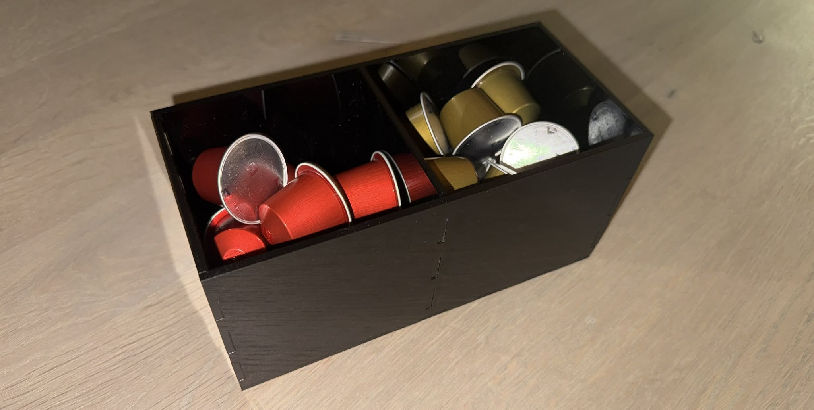
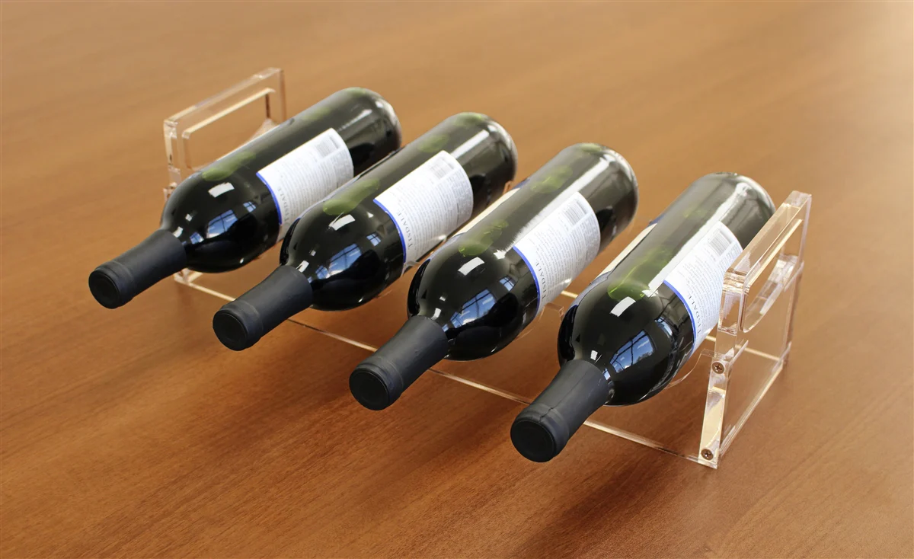
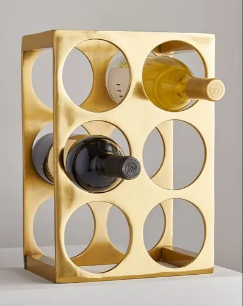
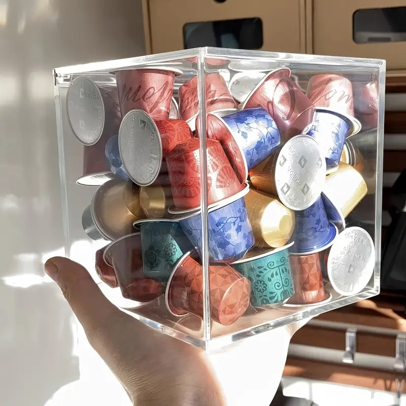
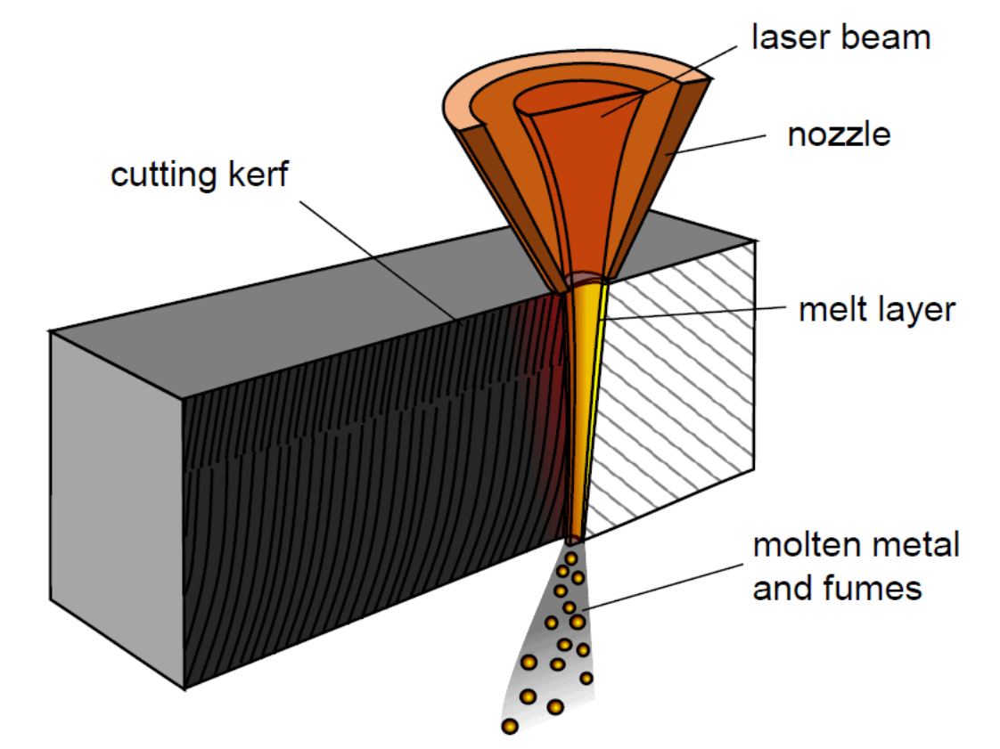
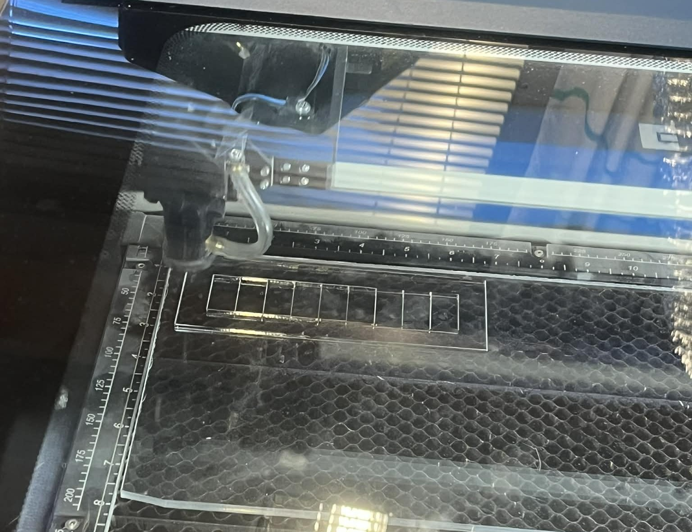
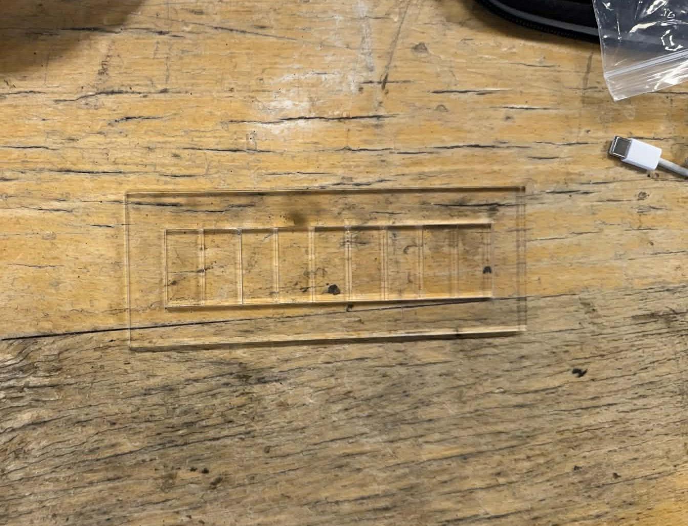
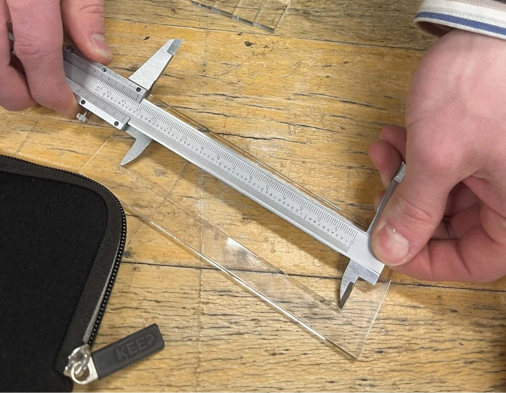
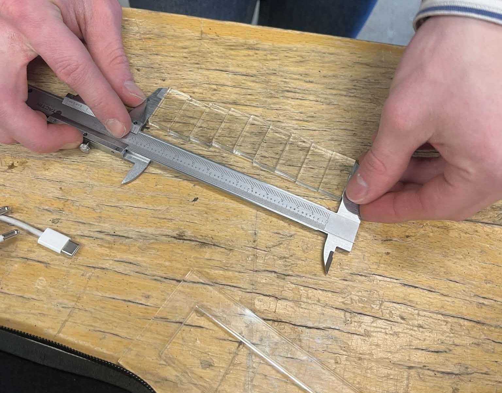
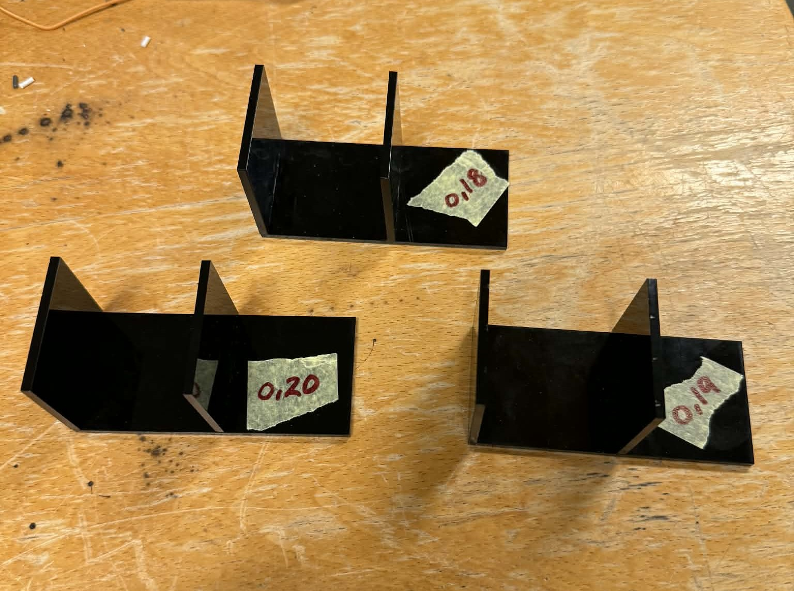

Verkefni 2
Parametrísk hönnun og tölvustuddur skurður

Verkefnalýsing
Helsta markmið verkefnisins er að nota vínylskera til að framleiða hlut innan 100 × 50 cm skurðarflatar og jafnframt hanna parametrískt, geirneglt módel. Áhersla er lögð á að módelið sé skalanlegt og byggt á góðum parametrum sem gera kleift að aðlaga meðal annars efnisþykkt, hæð og breidd.
Hönnun og val
Upprunalega ætlaði ég að hanna eitthvað mjög flókið fyrir þetta verkefni, en ég hafði í raun enga skýra hugmynd um hvað það ætti að vera. Fyrsta hugmyndin mín var að gera vínrekka og ég var byrjuð að teikna hann í Fusion þegar í ljós kom að glæri 5 mm akrýlinn var búinn 😢. Ég taldi ólíklegt að vínrekkinn myndi halda flöskunum nægilega vel ef hann yrði gerður úr 3 mm glæru akrýli og því ákvað ég að hætta við þá hugmynd.


Eftir stutt spjall við samnemanda minn, Aaron Asug Rosento, fékk ég þá sniðugu hugmynd að leita að flottum vörum á TEMU og endurgera eina þeirra. Ég hóf leitina þar og fann mjög flottan kaffihylkjakassa. Þar sem við fjölskyldan drekkum mikið kaffi og kaffihylkin hafa tilhneigingu til að enda út um allt fannst mér þetta vera bæði nytsamleg og sniðug lausn, þó hönnunin væri kannski ekki mjög flókin.
![kaffihylkjakassa](https://www.temu.com/is-en/acrylic-coffee-pod-holder-with-lid-for-clear-coffee-capsule-storage-organizer-3-compartments-coffee-bar-station-organizer-compatible-with-coffee-pod-coffee-creamer-g-601105077368522.html?_oak_mp_inf=EMrt7%2FS61ogBGiAzMGU5ZWRiNGJmZDY0NzY1YTk5ZmZhODIwZjdmYmQ5MiDg%2F8qhzzM%3D&top_gallery_url=https%3A%2F%2Fimg.kwcdn.com%2Fproduct%2Ffancy%2F028a2364-068a-4147-afb7-820c251cf67a.jpg&spec_gallery_id=27586598511&refer_page_sn=10009&freesia_scene=2&_oak_freesia_scene=2&_oak_rec_ext_1=NTQ5MA&_oak_gallery_order=485453594%2C606848856%2C950861409%2C749665316%2C275421611&search_key=coffee%20pods%20holder&refer_page_el_sn=200049&_x_vst_scene=adg&_x_ads_channel=google&_x_ads_sub_channel=search&_x_ads_account=5961676174&_x_ads_set=21916969616&_x_ads_id=167458831101&_x_ads_creative_id=721683454248&_x_ns_source=g&_x_ns_gclid=Cj0KCQjwsdnNBhC4ARIsAA_3heiREndwl2z6603B531L3psMh1muh0wvRE6NezQtrausV-kZde36GmUaAmHbEALw_wcB&_x_ns_placement=&_x_ns_match_type=e&_x_ns_ad_position=&_x_ns_product_id=&_x_ns_target=&_x_ns_devicemodel=&_x_ns_wbraid=CkEKCQjwsdnNBhDjARIwADmAlzMIiUiIfVZErJ0mrO0QLaxYVBQrPiTS_ShTIxxusjq3MmwsEvqu7LR5iAADGgLV6g&_x_ns_gbraid=0AAAAAo4mICHbeJYWddan22VOAomyF0Vy4&_x_ns_keyword=temu&_x_ns_targetid=kwd-4583699489&_x_ns_extensionid=&_x_sessn_id=y4zjscup6n&refer_page_name=search_result&refer_page_id=10009_1773623638472_c63mhiw621){kind=link}

Kerf próf
KERF er mæling á því hversu mikið aukaefni laserskerinn fjarlægir þegar hann sker.

Það má líkja þessu við að teikna eftir línu með þykkum penna. Jafnvel þótt reynt sé að fylgja línunni fullkomlega verður strokið alltaf aðeins breiðara en línan sjálf. Laserskerinn virkar á svipaðan hátt þ.e. hann sker ekki einungis nákvæmlega á mörkunum heldur eyðir einnig smá efni í kringum skurðinn. Þetta verður til þess að skurðurinn verður alltaf aðeins breiðari en upphaflega var gert ráð fyrir.
Til þess að hlutur sem er skorinn út verði í réttri stærð þarf því að þekkja þetta frávik og taka tillit til þess í hönnuninni. Til að áætla þessa auka breidd var framkvæmt svokallað KERF-próf, þar sem mælt var hversu mikið efni laserskerinn fjarlægði umfram hina skilgreindu skurðlínu. Skornir voru út níu ferningar á 3 mm glæran akrýl sem voru allir að stærð 20x40 mm. Hér fyrir neðan má sjá mynd af þessu.


Við reiknuðum frávikið með því að nota þessa jöfnu hér:
KERF = (lengd skurðar - lengd ferninga) / fjöldi skurða
Lengd skurðarins mældist um 134,6 mm og samanlögð lengd ferninganna um 133,0 mm. Fjöldi skurða var 10. Samkvæmt jöfnunni hér að ofan fékkst því að frávikið væri:
KERF = (134,6 mm - 133 mm) / 10 = 0,16 mm


Til að kanna hvort KERF-mælingarnar hefðu verið nægilega nákvæmar var skorinn út einfaldur press-fit hlutur til að prófa hversu þétt hlutarnir pössuðu saman. Þetta próf gekk þó frekar brösulega þar sem ég þurfti að endurtaka það fimm sinnum áður en hlutirnir pössuðu rétt saman.
Fyrst stillti ég KERF-gildið á 0,16 mm en þá voru festingarnar alltof lausar og hlutirnir héldust ekki saman. Næst prófaði ég 0,17 mm en útkoman var svipuð og þeir voru enn of lausir. Ég ákvað því að hækka gildið í 0,18 mm. Þá fóru hlutirnir að passa saman en tengingin var þó enn frekar laus.
Eftir þetta spurði ég Magnús hvort eðlilegt væri að þurfa að endurtaka prófið svona oft og vera komin svona langt frá upphaflegu KERF-mælingunni. Hann benti mér á að skoða teikninguna betur, þar sem mögulega gæti eitthvað í festingunum hafa verið rangt teiknað. Ég fór því vandlega yfir teikninguna en sá ekkert sem benti til villu eða óeðlilegrar lögunar.
Í framhaldinu ákvað ég að prófa að hækka KERF-gildið meira og stillti það á 0,20 mm. Þá reyndust festingarnar hins vegar alltof þéttar og hlutirnir tengdust varla. Að lokum var því aðeins einn möguleiki eftir, sem var að prófa 0,19 mm. Það reyndist vera rétt stilling og þá pössuðu hlutirnir fullkomlega saman.

Möguleg skýring á því að þurft hafi að færa gildið svona langt frá upphaflegu KERF-mælingunni er sú að í press-fit prófinu var notað annað efni, nánar tiltekið 3 mm svart glansakrýl, en í sjálfu KERF-prófinu var notað glært akrýl. Efnismunur getur haft áhrif á hvernig laserskurðurinn hagar sér og þar með á raunverulegt KERF-gildi.
Geislaskurður
Vínylskurður
Ég byrjaði á því að hlaða niður Inkscape sem er myndvinnsluforrit. Til að læra betur á forritið horfði ég á kennslumyndband frá Hafliða um inngang að Inkscape og hvernig á að undirbúa skjöl fyrir geislaskurð. Mig langaði að búa til nokkrar mismunandi gerðir af límmiðum til að sjá hvernig þeir myndu koma út við prentun, þ.e.a.s. hvort erfiðara yrði að prenta suma þeirra en aðra. Hér fyrir neðan má sjá allar teikningarnar sem ég ætlaði að prenta út. Allar myndirnar voru sóttar í gegnum netið og færðar inn í InkScape.

Eftir að ég var búin að teikna allt upp í InkScape valdi ég mér efni. Það sem varð fyrir valinu var glansandi svart efni. Að því loknu færði ég teikningarnar yfir á minnislykil. Þá var allt tilbúið og ég gat sett skrárnar í vínylskerarann.


Það var margt sem hefði mátt betur fara í þessum hluta verkefnisins. Til að byrja með valdi ég ranga stillingu eða gerði eitthvað rangt í vínylskeraranum sem varð til þess að þrjár efstu myndirnar á blaðinu hér fyrir ofan skárust ekki rétt út. Einnig vildi svarta glansefnið ekki festast við límbandið sem við áttum að nota til að færa límmiðana yfir á. Til að leysa þetta vandamál stakk Magnús upp á því að nota hamar og þrýsta honum fast á límbandið þannig að límið festist almennilega við glansefnið. Það reyndist virka mjög vel.
Hér fyrir neðan má sjá lokaútkomuna á límmiðunum. Það eina sem kom ekki nógu vel út var að komman yfir é-inu í Vélin festist ekki á límbandið þegar ég ætlaði að færa límmiðann yfir á tölvuna mína. Ég áttaði mig þó ekki á því fyrr en nokkrum dögum síðar.

Leitarorð
wine rack 5mm acrylic,